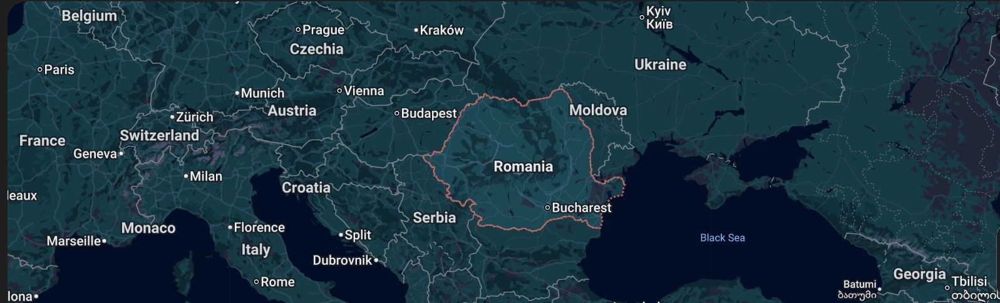
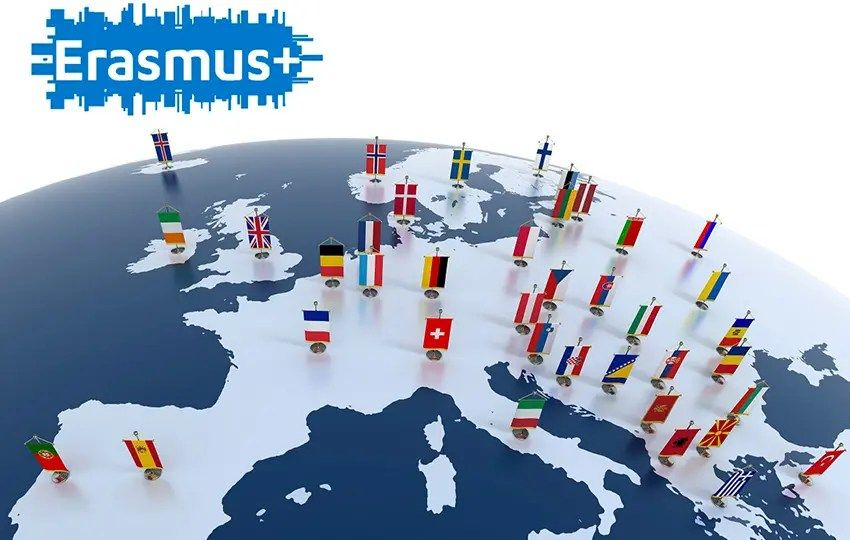
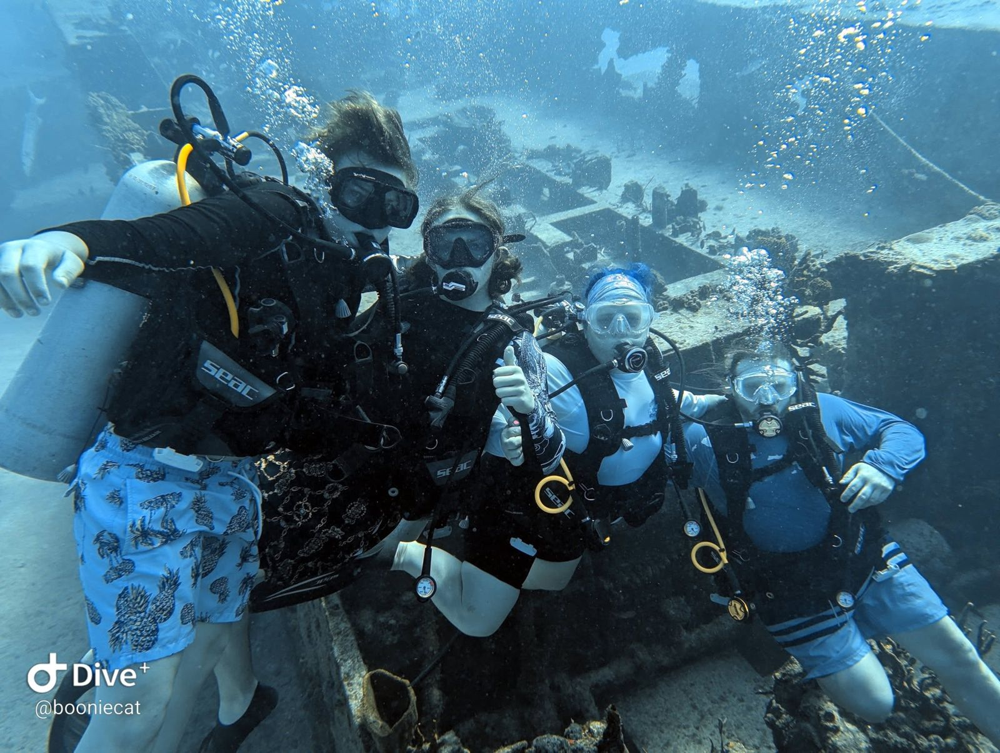
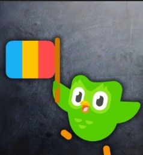
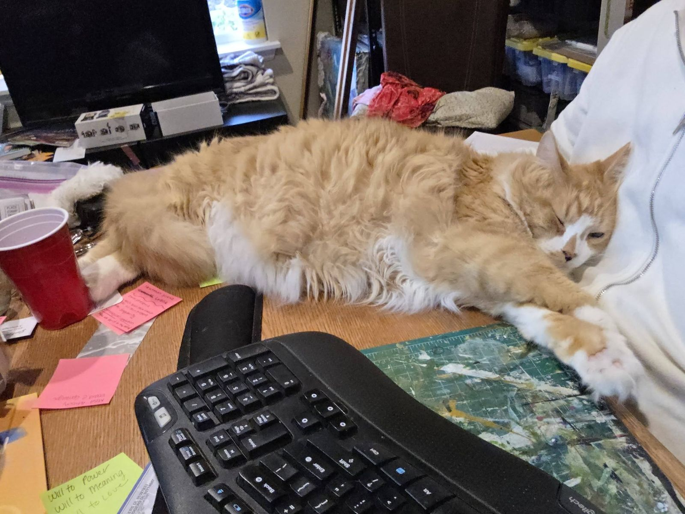

Journey 01 · Timișoara Note 1 of 11 Field Note
A Year in the Making: Saying Yes to Romania
Almost a year ago, not long after I was accepted into the doctoral program at Gonzaga, I hit “submit” on an application that felt equal parts thrilling and wildly ridiculous.

Thrilling, because the opportunity was real. A full semester abroad! A different academic environment! New mentors, new questions, new rhythm. An amazing, once in a lifetime opportunity!
Ridiculous, because no small part of my brain was stuck on, “you 40* years old” and “Who do I think I am?”
That’s the real beginning of this adventure, equal parts thrilling and “what am I doing?!”
Spoiler alert: I applied anyway.

At the time, it was just a dream with a few forms and essays attached, and an interview portion I stressed over for days leading up to it. When I was selected, it was an unreal moment of knowing that a dream I have held for a long time has finally come true – the actual chance to study abroad for a semester! And in a completely new ciuntry and context!! But, it was also the kind of dream that looks really inspiring on paper and mildly unhinged at 2 a.m. when you remember you have a whole real life already: family routines, kids, work responsibilities, volunteer commitments, a doctoral workload, and a brain that occasionally spirals into “you’re definitely not qualified for any of this.”
Fortunately, I have an amazing support system and cheering squad in my corner. From the amazing professors and department leaders at Gonzaga who support me and have infinite confidence in my capabilities, to my amazing spouse who said “yes” to me taking this crazy opportunity as a fully grown, 40-something year old Mom, I have been able to embrace the discomfort and fear of growth, and lean into the excitement of adventure and opportunity!

The slow transformation from “maybe” to “real”
What I didn’t expect was how long the middle part would be: The waiting. The paperwork. The emails. The coordination across systems that, it turns out, do not share a brain.
But over time, the oddly paced exchange became less like an abstract opportunity and more like a steady accumulation of small confirmations that this is really happening:
- A “yes” email that made my heart race
- A contact name at the host university that turned “Romania” into an actual human connection
- Academic planning that forced me to clarify what I’m doing, and why
- The growing list of practical decisions that make a life temporarily portable
- Plan tickets, hotel reservations, suitcases and amazon boxes full of “necessary” things.
- So many Amazon boxes. So. Many.

It was a long sequence of tiny commitments, slowly converting excitement into reality. The dreamy part where I was stylish and walked everywhere with a coffee saying “Bună!” while effortlessly carrying a bag of academia did not disappear, but it did get a more realistic filter. It started to look like something I was actually going to get to do and not just think about. It was the small details that really made it seem real – choosing an international phone plan, watching documentaries and imagining myself there, making a little green owl happy with my commitment to practicing some truly random vocabulary.
Exciting and intimidating
It’s exciting, and it’s also intimidating.
This isn’t just travel, not like I am accustomed to anyway. It’s not a vacation, and it’s not a clean academic retreat either. It’s an in-between thing: I’m stepping into a different context as a doctoral student, but also as a person who has to learn how to live there, which is new to me.
I have traveled to some amazing places, and lived in several of them, but there are lots of things that change when you go from “tourist visiting” to “temporarily living” some place new – especially when it’s a completely new culture and language. How do you navigate and get around without relying on a taxi everywhere. How do you ask questions and figure out social norms. How do you live a real life outside the tourist center of town and manage the boring day to day things like laundry and post offices and bill paying. How do you pronounce words with those squiggles around the letters. Basically – it’s how to be a beginner again in public.
There’s a version of intimidation that comes from fear of failure. And then there’s the kind that shows up when you sense you’re about to be changed by something, and you are not sure just what that means yet.
That’s the intimidation I’ve been feeling most.
Preparing for this experience has already forced me to look at myself in new ways:
- How much I rely on familiar systems without noticing
- How quickly I turn uncertainty into “I should already know this”
- How often I equate my competence with my worth
- How much comfort I take in being fluent, informed, and in control
If nothing else, this process has been a lesson in humility, and likely will continue to be. And not the performative kind, where I dramatically pose in a single beam of light, wrist to my forehead as I say “Oh, look at me navigating these challenges” while people throw roses at my feet with tears in their eyes saying “noooooo, you’re so amazing!”.
No, I mean the real kind of humility, the one that is really, really uncomfortable. The humility that happens when you realize you can’t just brute force your way through the unknown with confidence (faux or otherwise) alone. There is no theater, no roses. Just self-assessment, an openness to being corrected and guided, and a willingness to learn.
The “leadership” part is not separate from the life part
One thing I keep noticing throughout all of this, is that leadership, the thing I study and think about constantly, is not waiting for me in a classroom in Romania.
It’s already here, embedded in the preparation, some of it harder than others:
- Coordinating across institutions
- Managing uncertainty without spiraling into avoidance
- Holding excitement and fear at the same time
- Making decisions with incomplete information
- Building relationships through email and trust before I even arrive
- Letting the process shape me instead of fighting it
So in a way, this exchange started the moment I applied. Not when I land. Not when classes begin. Not when I “officially” become the person doing the thing.
It started when I said yes, and then kept saying yes in smaller ways for months.
Why I’m writing this
I’m starting this blog because I want a place to capture the human side of this experience before it gets flattened into a highlight reel on social media or a line on a CV.
I want somewhere to hold the small observations, the cultural surprises, the moments that feel funny or uncomfortable or unexpectedly meaningful. I also want a record of how this changes my thinking. Not in polished academic language (I am sure there will be an annoying amount of that regardless), but in real-time field notes.
I also want this to be a place to practice the part of doctoral study that is hardest for me: philosophical reflection. Not polished academic writing, not “right answers,” just the discipline of slowing down long enough to notice my assumptions, name the tensions, and make meaning from what I’m experiencing as it happens. My instinct is to move fast, solve problems, and stay in “logistics mode.” This is me trying to slow down, pay attention, and do the meaning-making on purpose, without turning it into a formal paper. Clearly, based on this 40 million character first entry, I have space to grow.
Right now, I’m still in the “before” chapter: the lists, the planning, the final confirmations, the mental rehearsal, the packing decisions that I am for some reason treating as philosophical. The nervous energy that arrives in waves and winds up in my tummy. The awareness that I’m about to walk into a season where I won’t get to be the expert, and how uncomfortable that thought makes me even while it excites me.
But let’s be honest, that’s part of why I chose this.
The plane ticket may be the official marker for the opening chapter, but this story has already been unfolding for a year.

Originally published at fieldnotesfromabroad.com/2026/02/22/year-in-the-making/